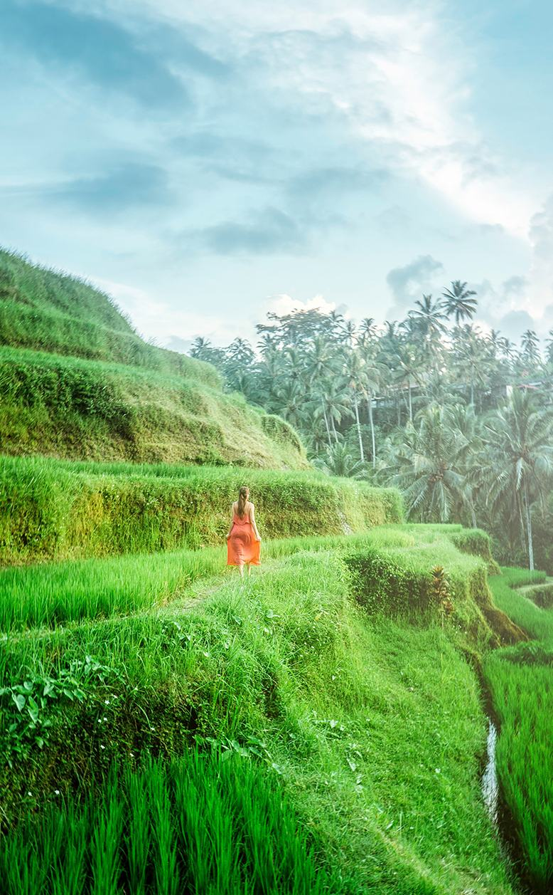
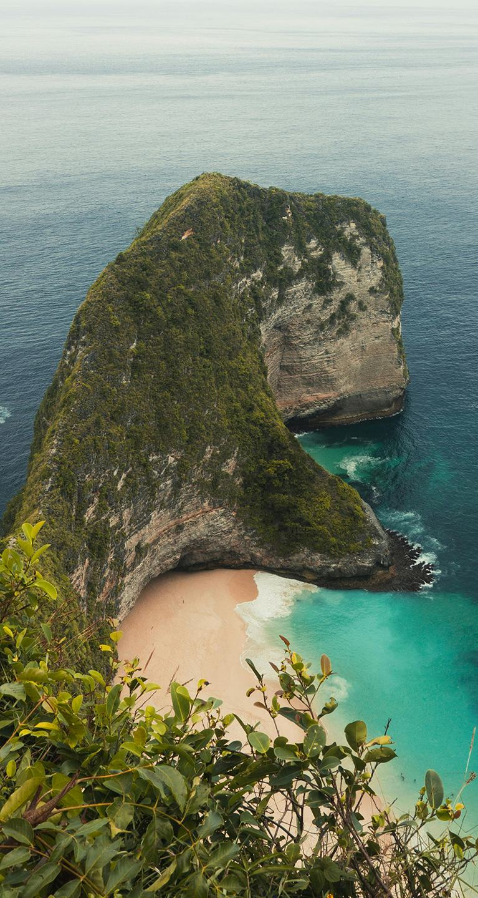

من نحن
بوابتك إلى بالي
Bali Trips منصة رقمية متخصصة بالكامل في جزيرة بالي، تحوّل تخطيط السفر إلى تجربة سهلة وملهمة عبر جداول مختارة، وترشيحات موثوقة، وخريطة تفاعلية، وحلول سفر شخصية.
جاءت الفكرة من خبرة الأستاذ سعيد في بالي ومعرفته بما يبحث عنه المسافر العربي: أماكن موثوقة، وخيارات عائلية، ومطاعم حلال، وتخطيط واضح.
رؤيتنا
أن تصبح Bali Trips الوجهة الرقمية الأولى للمسافرين الراغبين في استكشاف بالي، بتجربة تجمع المعرفة والتخطيط والاستكشاف في منصة واحدة.
رسالتنا
أن نمكّن المسافرين من اتخاذ قرارات أفضل قبل رحلتهم وأثناءها، من خلال معلومات موثوقة وتجربة رقمية مبتكرة.
ما الذي يميزنا
مبنية لبالي، ولك
لماذا بالي؟
جزيرة فيها ما يناسب الجميع
مدرجات أرز وغابات في أوبود، ومنحدرات وشواطئ في الجنوب، وبراكين في الشمال، وجزر على بعد رحلة قارب — مع ثقافة ترحب بالعائلات.
استكشف المناطق

نقاط الثقة